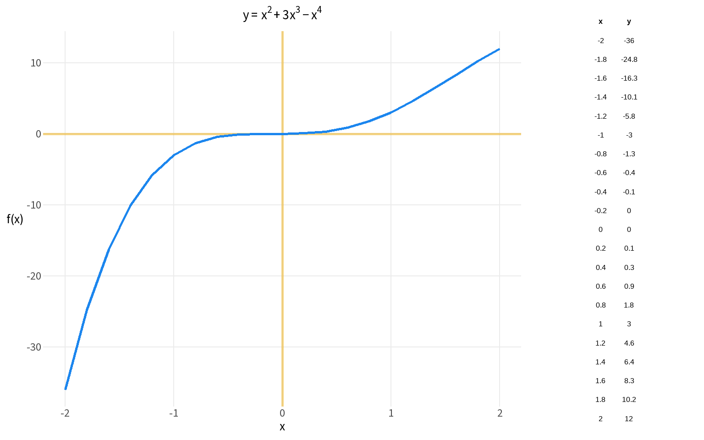

x_domain <- c(-2, 2)
num_steps <- 21
x <- seq(x_domain[1], x_domain[2], length.out = num_steps)
# Direct vectorised evaluation — concise when you only need the values once
y <- x^2 + 3*x^3 - x^4Calculus in R: Derivatives and Applications
Exercise 1: Functions
Abstract
An R translation of Mike X Cohen, Calculus in Python
The Python version of this notebook compared NumPy (numerical arrays) with SymPy (symbolic algebra). In R, all arithmetic is vectorised by default — there is no separate “numeric” mode. For symbolic algebra, the Ryacas package offers a comparable workflow, but for this course the key skills are numerical evaluation and plotting, which base R handles naturally.
Exercise 1
Graph the function \(y=x^2+3x^3-x^4\)
Wrapping in a function adds value when you need reusability (e.g. passing to uniroot(), integrate(), or calling at multiple points)
In Python, SymPy represented the function symbolically before plotting
In R, wrapping the expression in function() achieves the same re-usability
f <- function(x) x^2 + 3*x^3 - x^4
y <- f(x)
out <- tibble(x=x,y=y) %>%
round(1)
tbl_grob <- tableGrob(out,
rows=NULL,
theme = ttheme_minimal(base_size=12))
p <- ggplot(out, aes(x, y)) +
geom_hline(yintercept = 0,
color="darkgoldenrod2",
linewidth = 1,
alpha=.5) +
geom_vline(xintercept = 0,
color="darkgoldenrod2",
linewidth=1,
alpha=.5) +
geom_line(linewidth = 1, color="dodgerblue2") +
coord_cartesian(xlim = x_domain, ylim = range(y)) +
labs(x = "x", y = "f(x)",
title = expression(y == x^2 + 3*x^3 - x^4)) +
base_grid +
theme(axis.title.y = element_text(angle = 0, vjust = .5))
grid.arrange(p, tbl_grob, ncol = 2, widths = c(3, 1))
In Python, sym.lambdify() converted a SymPy expression into a callable numerical function. In R, functions are already callable — no conversion needed.
# Evaluate at a single point (analogous to fx(2) after lambdify)
cat("f(2) =", f(2), "\n")f(2) = 12